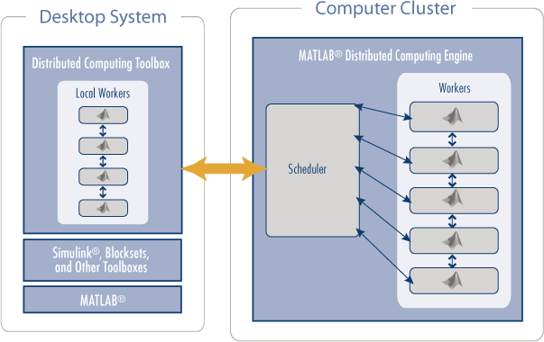

The LUCRETIA
Project
Parallel Lucretia Simulations Using the Matlab Distributed Computing Toolbox (DCT) and Distributed Computing Engine (DCE)
What it is
The DCT is a toolbox you can purchase for your Matlab product like any other toolbox. It contains the code that allows you to parallelise your simulation (either 'embarrassingly' so or proper grown-up parallel coding). By itself (as of R2007a), it allows you to run parallel jobs on up to 4 cores (or CPUs) that must share the same physical memory as your running Matlab session. If you want to deploy the parallel code on a cluster of systems, you need the DCE. The DCE works in conjunction either with the installed scheduler on your cluster or Matlab's own which ships with DCE and distributes the tasks of your parallel jobs using the DCT. The code you write in your program can be made to look independent of the actual hardware configuration. The DCE is purchased differently from most toolboxes, in that you pay according to how many nodes you need (8, 16.... 128+). Each separate task spawned by your parallel jobs uses one of the licensed nodes. The DCE can be rather tricky to set-up if you are not used to system administration tasks: if you can get your local friendly system administrator to do it for you, so much the better. There are at least now some very good instructions for almost any imaginable parallel architecture that come with the toolbox.
 (taken from Mathworks online DCT documentation)
Overview
Just by using R2007a on a multi-core cpu system you get some parallelisation benefits as standard as from this release Matlab is a multi-threaded application and a lot of Matlab's built-in functions run in a multi-threaded way (the multithreading is switched off by default though- you need to switch it on in the file>preferences menu). I won't go through all the set-up procedures here, the documentation is very good on this. Basically, you need to tell your Matlab session about the scheduler your system is using, then create parallel jobs which themselves can contain numbers of tasks to run in parallel. There is some built-in parallel constructs to Matlab (and promises of more in the future), such as the parallel for loop - parfor. This automatically parallelises for loops by sending the code to parallel nodes with near equal number of loop indices each to process. Obviously, to take advantage of this the code in the parfor loop must be able to run independently of any other of the loop instances running. So careful analysis of your loops need to be made before changing from for to parfor.
Example
Here is a real example of the use of the DCT to speed up a simulation I use that demonstrates some of the features of the toolbox and some of the issues of Matlab parallel coding in general. This assumes a certain degree of familiarity with Lucretia.
One of the obvious pieces of code to parallelise in a Lucretia simulation is
the beam tracking- it can be slow if tracking many macro-particles, and is
possibly very repetitively used. Lets take the example of a simulation of the
ILC (International Linear Collider), where one is tracking the beam through the
Low Emittance Transport areas of the machine (from the exit of the damping ring
through the bunch compressors, linac, beam delivery system and through to the
IP). Both sides of the ILC are simulated (electron and positron beamlines), and
the simulation calls for many 1000's of pulses to be tracked through the
lattice. There are at least 2 ways of parallelising this: Each pulse
(bunch) tracked consists of many simulated 'macro' particles, for the most part
each macro particle can be tracked independently of the others so sending
different macro particles to be tracked on different nodes is one way of
parallelising this task; another way, as we are simulating both (very similar)
halves of the Collider, is to track all macro particles for a given side on a
separate compute node.
The BEAMLINE array is very large for the whole of the ILC- nearly 100,000
elements in the present model, which together with ancillary arrays and
variables uses over 100MB of memory to store. This places a considerable
overhead when parallelising the tracking as the memory needs to be broadcast to
each worker node before the tracking can start. An important thing to do here is
only pass the piece of BEAMLINE needed by each parallel task. Even so, the
overhead experienced is of the order of 10s. The tracking can take over a minute
to complete serially however, so the parallelisation step is a win (note that
this does mean one does not see any where near a factor 2 improvement in speed
however).
One of the studies performed in this simulation involves looking at the effect
of short-range wakefields when passing through e.g. accelerating cavities or
tight collimators. This, as well as cases where CSR needs to be looked, at
breaks the neat situation where the bunch can be broken up into independent
non-interacting macro-particles which can be separately tracked on
non-communicating nodes. It is still possible to gain speed improvements by
parallelising the tracking this way, so long as the number of elements where
there are collective beam effects is small compared with the total number
tracked through. Here one uses 2 parallel constructs available to us in DCT
to help us out: The barrier command causes all parallel instances
of tracking to stop when they come to an element requiring all macro-particles
to perform a calculation (e.g. to calculate a wakefield kick), then using the
broadcast command, all parallel tasks send their tracked macro
particles to the master node which performs the collective calculation and again
uses broadcast to send the compute nodes their macro-particles
back to continue tracking. The number of macro-particles in the bunch also plays
a part in the efficiency of the parallelisation here as each broadcast
carries a time penalty related to the size of file (number of macro particles)
being sent. It should also be noted that whichever compute node gets the most
amount of macro-particles to track (assuming the number of macro-particles does
not precisely divide-up) sets the speed of the tracking as the other nodes have
to wait for it to catch-up at the barrier point.
So it can be seen this fairly simple example has a number of aspects to take into consideration when deciding how best to perform the parallelisation. Below, I go through an actual example in code of parallelising the ILC beam tracking in the first way (parallelising tracking in electron and positron beamlines).
The following is an edited extraction from my beam tracking routines simplified to try and show the parallelisation steps:
[elsewhere this happens to configure parallel environment, here we are
running on a single system 4-core processor]
Model.sched = findResource('scheduler', 'type', 'local');
If we were running on a larger distributed computing cluster, the only change in all this code would be to this line above which would tell Matlab which scheduler software we are using.
[ Then inside the beam tracking routine]:
1: for iSide=1:2
2: [ ........ ] - code cut
3: if Model.isParallel
4: if iSide==1
5: eBeam=Beamout;
6: else
7: pBeam=Beamout;
8: end
9: else
10: [stat,Beamout,instdata] = TrackThru( track1, track2,
Beamout, 1, 1, 0 );if stat{1}~=1; error(stat{2:end}); end;
11: TrackData =
dataSort(TrackData,instdata,Model,nTrack,iSide,track2,Beamout);
12: end
13:end
14:if Model.isParallel
15: pjob = createJob(Model.sched);
16: createTask(pjob, @pTrackThru, 3, {eBeam, {BEAMLINE{etrack1:etrack2}},
PS, GIRDER, WF});
17: createTask(pjob, @pTrackThru, 3, {pBeam, {BEAMLINE{ptrack1:ptrack2}},
PS, GIRDER, WF});
18: submit(pjob); waitForState(pjob);
19: jobResults = getAllOutputArguments(pjob);
20: destroy(pjob);
21: nTrack=0;
22: for iSide=sideTrack(1):sideTrack(2)
23: nTrack=nTrack+1;
24: if jobResults{iSide,1}{1}~=1;
error(jobResults{iSide,1}{2:end}); end;
25: Beamout = jobResults{iSide,2}; Beamout.type =
btype_keep{iSide};
26: TrackData =
dataSort(TrackData,jobResults{iSide,3},Model,nTrack,iSide,track2,Beamout);
27: end
28:end
pTrackThru is the following simple function:
function [stat,Beamout,instdata] = pTrackThru( Beam, bl, ps, gd, wf )
%----------------------------------------------------------------------
global BEAMLINE PS GIRDER WF
BEAMLINE=bl; PS=ps; GIRDER=gd; WF=wf;
[stat,Beamout,instdata] = TrackThru( 1, length(BEAMLINE), Beam, 1, 1, 0 );
This is the code that runs on each compute node in parallel. The data required to do the tracking is passed in each case through the function arguments- i.e. the beam, BEAMLINE, PS, GIRDER and WF structures. Note, global arrays are not global between different parallel compute nodes, so the standard Lucretia globals need to be redefined in each instance.
Code explanation
First, note the use of the Model.isParallel logical variable which is
used throughout the simulation to switch between serial and parallel behaviour.
Lines 1-13 in the serial case determine the track indices depending on the side
of the accelerator being tracked (BEAMLINE contains both halves of the
Collider) and tracks the beam (Beamout- different for each side). The
function on line 11 simply extracts the data resulting from the tracking
operation needed and puts it into a structure array.
In the parallel case for this code block, the beam representations (Beamout)
are simply stored in separate array structures.
The block of code lines 14:28, which only run when the parallel environment
switch is selected, create and run the parallel tracking jobs. Line 15 creates a
parallel job structure based on the scheduler structure initialised earlier.
Lines 16 and 17 create the 2 tasks this job has, namely the tracking of the beam
in each half of the accelerator- the tasks are created with the createTask
command which requires the job structure created earlier and a function handle
to be passed to it. The function handle points to the pTrackThru function, the
arguments to this are the beam to be tracked in each case and the portion of the
BEAMLINE structure required.
Line 18 submits the generated parallel job (and its 2 tasks) to the scheduler
(in this case Matlab itself is the scheduler) which decides how best to
distribute the tasks given to it amongst the available resources. Here we have 4
compute cores available and only 2 tasks, so this is easy. In theory, in this
case each task could have 2 nodes available to it- it would be good if the
multithreading was aware of this, although at the moment by design each task
runs as a single-threaded application (one can imagine it being difficult to
decide what to do for the best with a number of tasks equal to or greater than
the number of compute resources all requesting multiple threads).
The submit command is non-blocking; the Matlab interpreter continues to
process following lines of code unless the blocking command waitForState,
with the job you are waiting for passed to it, is given.
When the tasks are complete, the return arguments provided by pTrackThru are
stored in the pjob structure- the code on line 19 extracts all the results into
the jobResults array. We are now done with this parallel job, so it is
destroyed on line 20. The rest of the code checks the results for indications of
an error and bundles up the results as in the serial case.
whitegr
24-May-2007